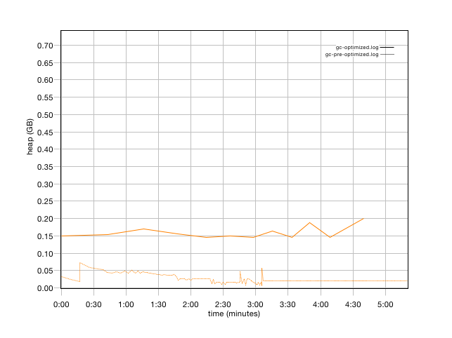
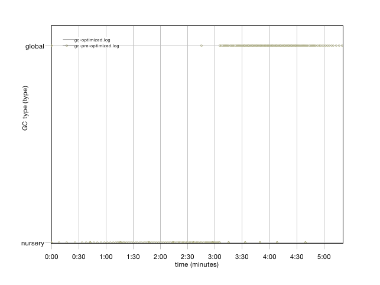

Version
| Variant | Version |
| gc-optimized.log |
|
| gc-pre-optimized.log |
|
![[Comment]](info.gif) Solaris JVM
Solaris JVMSource name
| Variant | Source name |
| gc-optimized.log |
|
| gc-pre-optimized.log |
|
Summary
| Variant | gc-optimized.log | gc-pre-optimized.log |
| Forced collection count | 0 | 0 |
| Full collections | 1 | 102 |
| Mean garbage collection pause (ms) | 417 | 410 |
| Mean interval between collections (ms) | 152 | 3141 |
| Number of collections triggered by allocation failure | 12 | 82 |
| Proportion of time spent in garbage collection pauses (%) | 0.83 | 13.57 |
| Proportion of time spent unpaused (%) | 99.17 | 86.43 |
| Rate of garbage collection (MB/minutes) | 1793 | 1259 |
Used tenured heap (before collection)
| Variant | Mean | Minimum | Maximum |
| heap (GB) | heap (GB) | heap (GB) | |
| gc-optimized.log | 0.14 | 0.14 | 0.14 |
| gc-pre-optimized.log | 0.17 | 0.12 | 0.17 |
Used tenured heap (after global collection)
| Variant | Mean | Minimum | Maximum |
| heap (GB) | heap (GB) | heap (GB) | |
| gc-optimized.log | 0.14 | 0.14 | 0.14 |
| gc-pre-optimized.log | 0.17 | 0.12 | 0.17 |
Used nursery heap (after collection)
| Variant | Mean | Minimum | Maximum |
| heap (GB) | heap (GB) | heap (GB) | |
| gc-optimized.log | 0.08 | 0.0 | 0.1 |
| gc-pre-optimized.log | 0.01 | 0.0 | 0.02 |
Pause time
| Variant | Mean | Minimum | Maximum | Total |
| time (ms) | time (ms) | time (ms) | time (ms) | |
| gc-optimized.log | 179 | 119 | 417 | 2325 |
| gc-pre-optimized.log | 237 | 14.8 | 530 | 43531 |
Heap size
| Variant | Mean | Minimum | Maximum |
| heap (GB) | heap (GB) | heap (GB) | |
| gc-optimized.log | 1.06 | 0.82 | 1.16 |
| gc-pre-optimized.log | 0.23 | 0.2 | 0.24 |
Free heap (before collection)
| Variant | Mean | Minimum | Maximum |
| heap (GB) | heap (GB) | heap (GB) | |
| gc-optimized.log | 0.2 | 0.15 | 0.67 |
| gc-pre-optimized.log | 0.02 | 0.01 | 0.07 |

Free heap (after collection)
| Variant | Mean | Minimum | Maximum |
| heap (GB) | heap (GB) | heap (GB) | |
| gc-optimized.log | 0.84 | 0.67 | 0.95 |
| gc-pre-optimized.log | 0.06 | 0.05 | 0.11 |
GC type
| type | Variant | global | nursery |
| Total Instances | gc-optimized.log | 1 | 12 |
| gc-pre-optimized.log | 102 | 82 |

Used nursery heap (before collection)
| Variant | Mean | Minimum | Maximum |
| heap (GB) | heap (GB) | heap (GB) | |
| gc-optimized.log | 0.71 | 0.01 | 0.87 |
| gc-pre-optimized.log | 0.05 | 0.0 | 0.07 |
Nursery size
| Variant | Mean | Minimum | Maximum |
| heap (GB) | heap (GB) | heap (GB) | |
| gc-optimized.log | 0.79 | 0.67 | 0.87 |
| gc-pre-optimized.log | 0.06 | 0.05 | 0.07 |